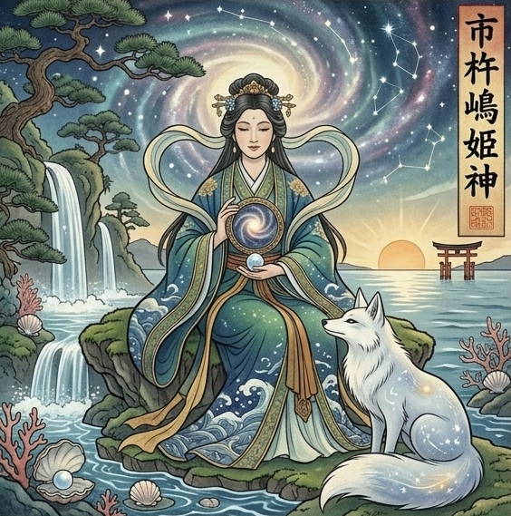

あき様は本来
本物と偽物を
はっきり見分けられる方です。
人でも物事でも
「これは違う」と感じたら
その直感が
ほとんど外れない。
美意識が高く
妥協ができない。
なあなあで済ませることが
本当は得意ではない。
それなのに
なぜ娘さんのことだけは
進めていいのか止めるべきか
こんなに答えが見えてこないのか。
あき様には
大切な人の気持ちや
その人らしさを
のびのび尊重したい
という優しさがあります。
「もう会うな」と
一度は止めても
娘さんが惹かれる心を
どうしても無下にできない。
娘さんの幸せを願う心と
娘さんの気持ちを
大切にしたい心。
他の親御さんなら
どちらかに割り切れることが
あき様の中では
両方とも本物だから
簡単に切り捨てられない。
だから今
「はっきり見極めたい自分」と
「娘さんの心を
尊重してあげたい自分」が
あき様の中でぶつかって
答えを出させてくれないんです。
でも、大丈夫です。
その答えの出し方を
あなたを守る神様が
ちゃんと視せてくれています。
あなたを守っているのは
市杵嶋姫命
（いちきしまひめのみこと）。
水の女神
濁った水面を澄ませて
本物のご縁だけを
映し出す神様です。

どんなに揺れる水面も
静かに整えて
本当に残すべきものを
くっきりと映し出す。
そんな見極めの力を持つ
神様の加護を受けているので
あき様はこれまでも
人生の大事な場面で
本物とそうでないものを
選び分けてこられたはずです。
娘さんは
深い海のような
藍色のオーラを持っています。
ただ、その水面には
とても繊細で
傷つきやすい感受性が
静かに揺れています。
娘さんは心の底が
とても深い方です。
一度大切だと感じた人を
簡単には手放せない。
だから何度離れても
また惹かれてしまう。
あの二人の間で
今本当は何が動いているのか。
娘さんの涙の奥に
何が隠れているのか。
このご縁が
娘さんを笑顔へ
連れていくのか。
その答えが
視えてくるのは
いつなのか。
私には、視えています。
ただ、これは
守護神からお預かりしている
娘さんとあき様の
これからを動かす
大切な言葉です。
本式守護霊視鑑定の場で
丁寧にお伝えさせて
いただきますね。
あき様の中で
起きているぶつかりは
時間が経てば
自然に片付くもの
ではありません。
迷いを抱えたまま
娘さんのお腹が大きくなり
赤ちゃんを迎える日が
近づいていった時。
その隣にいるあき様が
「娘を信じて見守れる自分」で
いられるか
「不安なまま
何も言えなかった自分」で
いるか。
その差は、今この瞬間に
あき様が
「本当の答えを知るか」
で決まります。
娘さんの心の中でも
今のこのご縁は少しずつ
「もう戻れない場所」へと
進んでいきます。
そうなる前に
あき様にちゃんと
知っていただきたいことが
私には視えています。
本式守護鑑定で
あき様にお渡しするのは
娘さんが心の奥で
何を求め
なぜあの相手に
惹かれてしまうのか。
ひとつひとつ視て
お伝えします。
このご縁が
娘さんの幸せへ向かうのか
別の道へ進むのか。
その答えがはっきりする
時期をお伝えします。
あき様の中に本来ある
本物を見抜く眼を
娘さんのために
どう使えばいいのか。
具体的にお伝えします。
今日からあき様にできる
娘さんを守り
笑顔へ導く関わり方を
お渡しします。
あき様ご自身の手で
娘さんの未来を
照らすための鑑定です。
その一歩を
ここから踏み出してください。
今、あき様のために
運命の扉は最も大きく開かれています。
この巡り合わせは
残念ながら永遠ではありません。
私からのこのお手紙を受け取ってから
24時間以内に一歩踏み出すと
止まっていた運命は
最もなめらかに動き始めます。
ご自身の手で
娘さんの幸せな未来を
守りたいと心から願うあき様へ。
通常20,000円のところ
今回に限り、特別価格9,800円で
本式守護霊視鑑定を行います。
1日限定3名までしかお受けできません
リンク先が表示されない場合
本日分は締切ですのでご了承ください。
お申し込み後、
購入時のお名前をお知らせください。
1日以内に、
あなただけの鑑定書をお届けします。
あき様の物語が
娘さんの笑顔とともに
あたたかな結末を迎えることを
私は守護の声を通して
すでに知っています。
ご縁に、心から感謝を込めて。